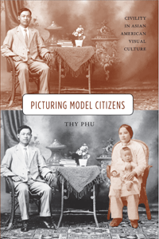

How images portraying Asians as civil subjects contribute to debates on Asian American citizenship
How images portraying Asians as civil subjects contribute to debates on Asian American citizenship


 How images portraying Asians as civil subjects contribute to debates on Asian American citizenship
How images portraying Asians as civil subjects contribute to debates on Asian American citizenship

|  |
Picturing Model CitizensCivility in Asian American Visual CultureThy Phupaper EAN: 978-1-43990-721-4 (ISBN: 1-4399-0721-8) |
"Picturing Model Citizens is a valuable contribution to the growing scholarship on Asian America and visual culture. Phu articulates a subtle and very useful trope of �civility� by which to account for the chasm between the demonized coolie and idolized model minority, between labor and citizenship. This theorization and a well-grounded deployment of visual culture, enables sophisticated close readings of several important sets of photographs in which Asian American subjects are featured. Phu�s extensive contextualization and detailed and sophisticated readings of the photographs are rewarding and generative. Picturing Model Citizens is likely to be widely used and cited."
—Robert G. Lee, American Studies Department, Brown University, and author of Orientals (Temple)
At the heart of the model minority myth—often associated with Asian Americans—is the concept of civility. In this groundbreaking book, Picturing Model Citizens, Thy Phu exposes the complex links between civility and citizenship, and argues that civility plays a crucial role in constructing Asian American citizenship.
Featuring works by Arnold Genthe, Carl Iwasaki, Toyo Miyatake, Nick Ut, and others, Picturing Model Citizens traces the trope of civility from the nineteenth to the twenty-first centuries. Through an examination of photographs of Chinese immigrants, Japanese internment camps, the Hiroshima Maidens project, napalm victims, and the SARS epidemic, Phu explores civility's unexpected appearance in images that draw on discourses of intimacy, cultivation, apology, and hygiene. She reveals how Asian American visual culture illustrates not only cultural ideas of civility, but also contests the contradictions of state-defined citizenship.
Excerpt available at www.temple.edu/tempress
"In Picturing Model Citizens, Thy Phu ranges across a century of photographs and shows how, time after time, the vexed relationship between civility and citizenship is at the heart of pictures of Asian Americans. From studio portraits to pictorialist street photography, from internment camp pictures to images surrounding the SARS epidemic, civility becomes, in her skillful hands, photography's unconscious. This is a fascinating read."
—Anthony W. Lee, Department of Art History, Mount Holyoke College, and founding editor of the series Defining Moments in American Photography
"This book concerns the appearance of Asians in nineteenth- and twentieth-century photographs as related, first, to civility and, secondarily, to issues of citizenship....Thy Phu is deeply interested in probing the symbolic meanings behind the photographs as they relate to Asians as the 'model minority.'... Phu makes some interesting points."
—Pacific Historical Review
"Picturing Model Citizens presents a compelling, original, and timely contribution to the nascent field of Asian American visual studies, productively drawing together a set of photographic archives and contexts that have, for too long, been arbitrarily imagined as discrete and disconnected.... Phu�s Picturing Model Citizens is itself a model of engaged and innovative scholarship, charting new directions for Asian American studies, visual studies, citizenship studies, and the emergent combinations therein."
—caa.reviews
"Picturing Model Citizens provides a new prism through which to view established understandings of the model minority myth and Asian American citizenship. In her brilliant introduction, Phu convincingly argues that civility is central to thinking about citizenship, particularly in relation to the emergence of this myth in the 1960s.... Phu�s introduction articulates an important argument about the ways that civility has been overlooked in Asian American Studies.... Picturing Model Citizens is an important study that offers a new perspective from which to view the model minority myth. In placing civility at the center of understanding Asian American citizenship, it is also likely to generate new ways of understanding Asian American history, identity, and community."
—MELUS (Multi-Ethnic Literature of the United States)
"What separates Picturing Model Citizens most distinctly from other recent scholarship on citizenship claims in Asian American photography...is [Phu's] deep engagement with the field of visual culture.... Picturing Model Citizens is a useful text for people studying Asian American history and culture and the history of U.S. photography, as well as for those interested in the philosophical and political stakes of theories of representation.... Overall, this is a valuable book, not just within Asian American studies and visual culture, but to all who are doing interdisciplinary, mixed-methods work in the humanities.... Phu�s Picturing Model Citizens offers compelling, smart, and convincing arguments about not just what photographs mean in Asian American visual culture, but how they operate�especially in a social world that is hostile to minoritized subjects who appear as anything but 'good' citizens or 'bad' immigrants."
—Journal of Asian American Studies
Acknowledgments
Prologue
Introduction: Clasped Hands and Clenched Fists
1. Spectacles of Intimacy and the Aesthetics of Domestication
2. Cultivating Citizenship: Internment Landscapes and Still-Life Photography
3. A Manner of Apology: Transpacifism and the Scars of Reparation
4. Racial Hygiene: SARS, Surgical Masks, and the Civility of Surveillance
Postscript: The Inhospitable Politics of Repatriation
Notes
Bibliography
Index
Thy Phu is an Associate Professor in the English Department at Western University. She is editor of the Americas region for the journal Photography and Culture, and co-editor (with Elspeth Brown) of a collection of essays entitled Feeling Photography.
Asian American Studies
Art and Photography
American Studies
© 2015 Temple University. All Rights Reserved. This page: http://www.temple.edu/tempress/titles/2162_reg.html.